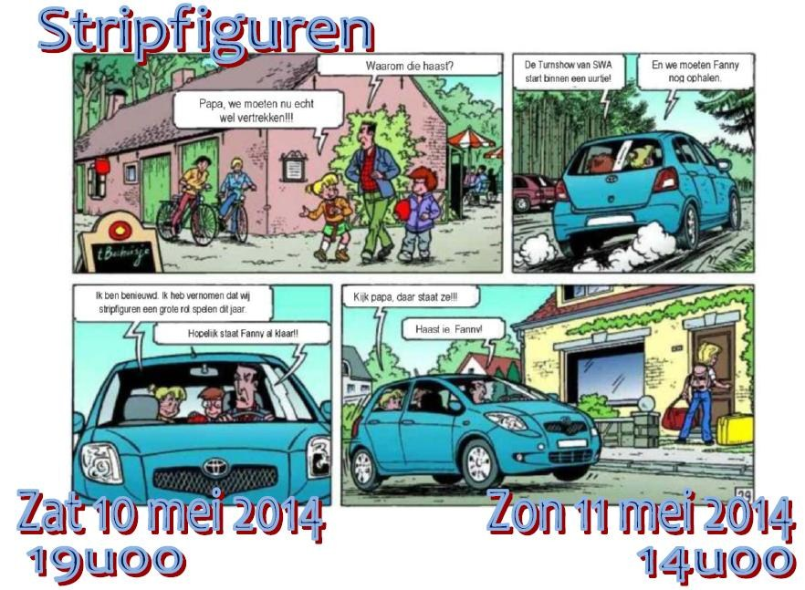

Beste ouders, leden en sympathisanten,
Zoals elk jaar kijken we vol ongeduld uit naar onze turnshow. Dit is het moment voor onze turners om te laten zien wat ze het afgelopen jaar allemaal geleerd hebben.
Om van deze show een mooi geheel te maken, werken we steeds rond een thema. Dit jaar roepen we daarvoor de hulp in van bekende en minder bekende striptekenaars, want in 2014 draait alles rond …
Noteer alvast deze data, want zoals vorige jaren verwelkomen we u graag in de sporthal PLANTIN-MORETUS aan de Plantin- en Moretuslei 343, 2140 Borgerhout.
Op zaterdag kan u vanaf 18u30 uw favoriete plaatsje innemen en gaan we van start om 19u00. Op zondag houden we een middagvoorstelling, waarvoor vanaf 13u30 de deuren opengaan en de show om 14u00 start.
Datum: zaterdag 10 en zondag 11 mei 2014
Locatie: Sporthal Plantin en Moretuslei (adres: Plantin en Moretuslei 343 te 2140 Borgerhout-Antwerpen)
Deuren: zaterdag 18.30 uur / zondag 13u30
Aanvang: zaterdag 19.00 uur / zondag 14.00 uur
Kassa: € 9
VVK: € 7 (vanaf maandag 21/04/2014)
Mail: U kan ook kaarten bestellen via e-mail op volgende adres: secretariaat@turnkringswa.be en het gepaste bedrag overschrijven op rekeningnummer IBAN BE43 9730 7195 1301, met vermelding van uw naam en het aantal kaarten. De kaarten zullen dan de avond zelf beschikbaar zijn aan de inkom.
Voor vragen kan u terecht op secretariaat@turnkringswa.be
Foto's van enkele van onze vorige shows en van de bijhorende generale repetities kan je bekijken in onze fotogallerij.